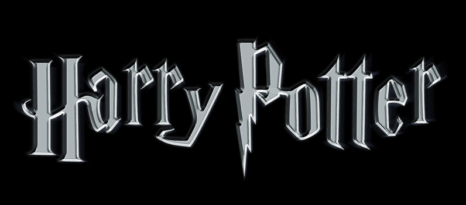

Joanne Rowling1 (Yate, South Gloucestershire, Reino Unido, 31 de julio de 1965), quien escribe bajo los seudónimos J. K. Rowling7 y Robert Galbraith, es una escritora y productora de cine británica, principalmente conocida por ser la creadora de la aclamada serie de libros Harry Potter.
La escritora británica Joanne Kathleen Rowling se ha hecho célebre por su serie de novelas dedicadas a las aventuras de Harry Potter, que se ha convertido en uno de los mayores fenómenos literarios de la historia. Las aventuras del héroe infantil Harry Potter, niño huérfano con poderes mágicos capaz de evadirse a voluntad a un mundo de fantasía, consiguieron batir todos los récords de ventas en la literatura del género, aunque muchos críticos se mostraban reacios a encasillar los libros de Rowling como cuentos para niños, como ocurriera con el famoso Tom Sawyer de Mark Twain. La persona que ha hecho posible que muchos niños y adolescentes prefieran leer un libro a pasar las horas muertas delante del televisor es una tímida británica que se propuso escribir siete entregas de la serie, que equivalen a los cursos que el protagonista debe superar en la escuela de magia y hechicería a la que asiste cuando se escapa de la horrible realidad cotidiana en casa de sus mezquinos tíos.